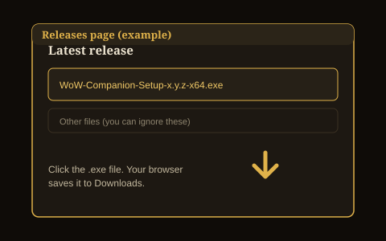
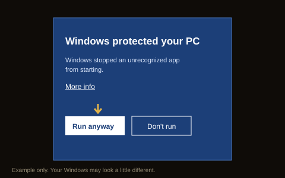
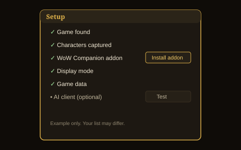
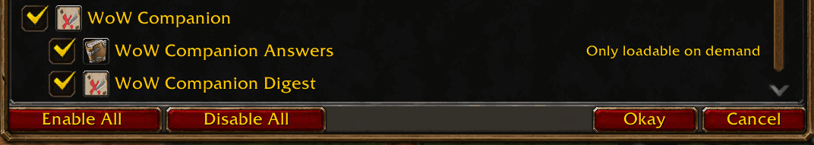
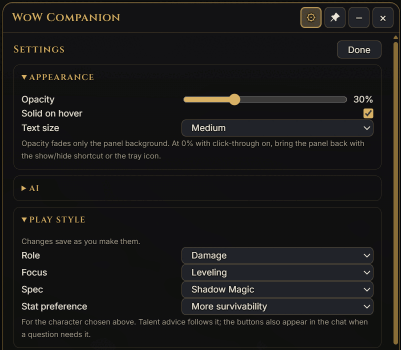

Getting started
This takes about 15 minutes, once. You'll need Windows 10 or 11 (64-bit) and the game installed.
There are two parts. The app is a small window beside the game. It makes your plan and answers questions. The addon runs inside the game. It records what your character has and shows your plan on the map.
What you need
- A Windows PC (Windows 10 or 11, 64-bit) with WoW: Forever installed.
- To ask questions, an account with an AI service, like Claude or ChatGPT. Your plan doesn't need one.
What the app does by itself: it builds your quest plan and draws the route on your map, and keeps the in-game panel up to date with your next steps, gear upgrades and talent picks. It works from what your character has and the game's own quest and item data, so no AI account is needed. Just keep the app running while you play.
What uses your AI account: asking questions in the app's chat, like "What should I do next, and why?" or "How do I level Tailoring?". WoW Companion doesn't come with its own AI. It uses an account you already have, or a free model on your own PC. See AI options.
1. Download the app
Open the latest release page. Click the file that starts with WoW-Companion-Setup and ends in .exe.
You'll see the file in your Downloads folder.

2. Run the installer
Double-click the file. It doesn't need administrator rights.
Windows may show a blue box saying "Windows protected your PC". That's Windows' SmartScreen check. It shows up because the installer isn't code-signed. Code signing costs money, and small free projects often skip it. To continue, click More info, then Run anyway.
You'll see WoW Companion in the Start menu.

3. Follow the setup checklist
Open WoW Companion. It shows a Setup checklist. Fix any red line with the button next to it:
- Game folder. The app looks for your game itself. If it can't find it, type your game folder into the box on the checklist and click Use folder.
- The addon. The checklist can install the WoW Companion addon for you.
- Display mode. In the game, open System, then Graphics, and set Display Mode to Windowed (Fullscreen). That lets the app float over the game.
- An AI account. It answers the questions you ask in the app. Your plan doesn't need it, so you can pick one now or later in Settings, under AI. See AI options.
The first time, the app also downloads a small game-data file from GitHub. Your plan needs it, so be online for that one step.
You'll see a green tick next to each line you need. To reopen the checklist later, click the gear, open Game, then click Setup.

4. Restart the game, then use /reload
The first time, quit the game completely and start it again. The game only notices a new addon when it starts.
After that, type /reload in the game chat whenever you want to refresh your plan. This makes the game save what your character has, so the app can read it.
You'll see WoW Companion in the addon list at character select, and your character's name in the app.

5. Look at the in-game panel
Type /wowc in the game to open or close the panel. It lists your next steps, and small badges count things like unspent talent points and upgrades. Hover a line to light up its number on the map.
You'll also find a round button on the world map and a button on the minimap. Fresh advice shows after the app has written it: type /reload, wait a few seconds, then type /reload again.
You'll see your next steps as numbered gold badges on the map.

6. Ask a question
In the app's ask box, type What should I do next? and click Ask. Not sure what to ask? Click a suggestion. Asking needs your AI account, so set one up first if you skipped that step (see AI options).
You'll see the answer appear in the app within a few seconds.

7. Find Settings and Play style
Click the gear in the app to open Settings. Play style is the place to say whether you play damage, tank or healer, and what you're focusing on. Talent advice follows it. Changes save as you make them.
Settings also holds the AI helper, how the app looks, and keyboard shortcuts.
You'll see "Saved" appear when a change is kept.

Something not right?
- The app isn't over the game: set Display Mode to Windowed (Fullscreen).
- The checklist says no characters yet: type
/reloadin the game, then reopen the checklist. - No numbers on the map: type
/reload, wait a few seconds, then type it again.